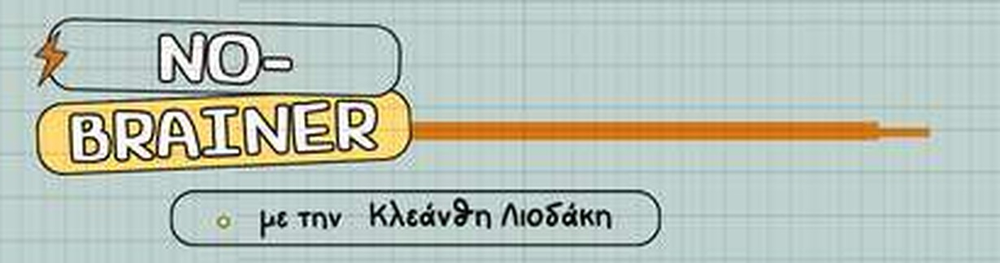

Το No-Brainer είναι ένα «βιντεοσκοπημένο» βιβλίο Γραμματικής, χτισμένο πάνω στα Ελληνικά σου. Δεν σου δίνει περισσότερη ύλη. Σου δίνει ένα σύστημα και μια σειρά, ώστε κάθε καινούργιο φαινόμενο να πατάει σε κάτι που ήδη έχεις.
Η σειρά δεν είναι τυχαία. Τα πρώτα τρία βήματα θέλουν λίγη υπομονή. Μετά το σύστημα τρέχει γρήγορα.
Πριν από κάθε γερμανικό κανόνα, βλέπουμε τι δουλειά κάνει κάθε λέξη στα Ελληνικά: ποιος κάνει, τι παθαίνει, σε ποιον πάει. Αυτό είναι το εργαλείο που θα χρησιμοποιείς σε όλη τη διαδρομή.
Τόπος, χρόνος, προθέσεις, άρθρα και καταλήξεις δεν μαθαίνονται ως πίνακες. Τα στήνουμε ως patterns, που τα αναγνωρίζεις και σε λέξεις που δεν έχεις ξαναδεί.
Οι χρόνοι, τα ρήματα με εμπρόθετο αντικείμενο, οι χρονικές προτάσεις, η Υποτακτική. Εδώ η πρόταση μεγαλώνει, και επειδή έχεις τα θεμέλια, δεν χάνεσαι μέσα της.
Αυτό το βήμα δεν είναι μέρος του No-Brainer. Είναι το επόμενο, πρακτικό κομμάτι: εφαρμόζεις όσα έμαθες σε Lückentexte και Fehlerkorrektur. Κάθε λάθος γίνεται διάγνωση: βρίσκουμε τι έγινε και γιατί, και σε στέλνω πίσω στο σημείο της Γραμματικής που το λύνει.
Το «μάθε να σκέφτεσαι στα Γερμανικά» είναι ο προορισμός και όχι η αφετηρία. Φτάνεις εκεί επειδή κάθε κομμάτι κουμπώνει πλέον με το προηγούμενο, στο C1 και στις εξετάσεις.
Ταλαιπωρήθηκα κι εγώ πολύ με τα Γερμανικά, ώσπου κάποιος μου έδειξε τον σωστό τρόπο να σκέφτομαι. Αυτόν τον τρόπο διδάσκω εδώ και 22 χρόνια.
489€ εφάπαξ ή 3 × 170€
Για ενήλικες σε επίπεδο Β2, σκουριασμένο Γ1 ή καλό Β1, που έχουν κάνει Γερμανικά, καταλαβαίνουν αρκετά, και παρ' όλα αυτά μεταφράζουν από τα Ελληνικά κάθε φορά που ανοίγουν το στόμα τους. Για γονείς και επαγγελματίες σε γερμανόφωνη χώρα που θέλουν να εκφράζονται άνετα.
Δεν είναι για αρχάριους. Χρειάζεται υπάρχουσα βάση για να δουλέψει η μέθοδος.
Ξεκινάω τη διαδρομήΕρωτήσεις; Γράψε μου στο hello@kleanthiliodaki.com
Κλεάνθη Λιοδάκη